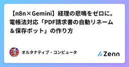
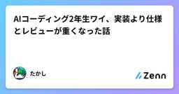
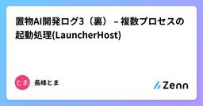
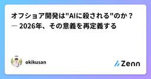
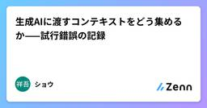

Zennの「生成 AI」のフィード
フィード
AIに質問する力＝研究力説？
Zennの「生成 AI」のフィード
この記事はこんな人向け生成AIを研究や学習に活用している人AIに質問しているのに、欲しい回答が得られないことがある人AI時代に必要なスキルについて考えている人 はじめに研究をしていると、よく「質問力が大事」と言われます。何が分からないのかどこまで理解しているのか何を知りたいのかこれらを整理して相手に伝えることができないと、欲しい答えはなかなか得られません。これは昔から言われていることですが、生成AIの登場によって、この重要性はさらに増したと感じています。 AI時代は「質問する回数」が増えた生成AIの登場によって、質問のハードルは大きく下がり...
7時間前
ゆるキャラはAIに任せていいの？ 地域ブランドを揺るがす生成AIの光と影
Zennの「生成 AI」のフィード
生成AIの普及により、地域おこしの「ゆるキャラ」制作はこれまでより格段に容易になるのではないか。従来はデザイナーへの依頼や複数案の検討など、時間と費用が大きな負担となっていたが、生成AIは短時間で多様な案を提示し、自治体の負担軽減に寄与する可能性があると思います。その一方で、AI生成物の著作権、既存キャラクターとの類似性、地域文化の表現の妥当性など、倫理的な論点も浮上してきます。今回は過去化に悩むとある町長さんがAIで町おこしをとの講演を聞きながら、ふと思ったAI活用の利点とリスクを整理し、地域ブランドを守りながらAIを活用するための視点を考えてみたいと思います。それはITプロの...
13時間前

【n8n×Gemini】経理の悲鳴をゼロに。電帳法対応「PDF請求書の自動リネーム＆保存ボット」の作り方
Zennの「生成 AI」のフィード
はじめに電子帳簿保存法（電帳法）の検索要件を満たすために、取引先からメールで送られてくるPDF請求書をいちいち開き、「日付・取引先名・金額」を確認してファイル名を変更する……。「20260315_株式会社〇〇_150000.pdf」この終わりの見えない手作業のリネームが、経理担当者の膨大な時間を奪い、現場の悲鳴に繋がっていませんか？今回は、この「誰もやりたくない退屈な作業」を、n8nと生成AI（Gemini 2.5 Flashのマルチモーダル機能）を使って完全自動化するワークフローの作り方をご紹介します。 💡 このツールでできること取引先から「請求書送付の件」といったメ...
14時間前
.drawio.svgをAIで出力させたがエラーが出て読めない場合(reading 'getAttribute')
Zennの「生成 AI」のフィード
Intro既存のソースのクラス図やディレクトリ構成などを図で出力したい場合、copilotに任せて楽をしたい。更にsvgで出力できるなら、markdownと相性が良いので説明文も楽になるはず。なのでcopilotでディレクトリ等を読ませ、それをdraw.ioのフォーマットとし(XMLで図の出力ができる)、.drawio.svgの形式で出力すれば望み通りとなるはず。しかし一連の流れをGPT-4.1などで出力した場合、出力された.drawio.svgが読み込めずうまくいかない事がある 作業環境vscode + copilot (GPT-4.1)vscode拡張機能 (Dr...
14時間前
Excel管理が嫌でMLflowを導入しつつあえてExcelも残した話ー計画はExcel・実行はMLflow
Zennの「生成 AI」のフィード
はじめに「あの時の良かったプロンプト、どのバージョンだっけ？」生成AIをある程度の規模でいじり始めてから、この問いに答えられない場面が増えました。Excelのセルを遡ると、値が上書きされている。ファイルへのリンクが切れている。3日前の実験条件すら正確に再現できない。企業における多くの現場で、実験管理は依然としてExcel、よくてNotionだと思います。本記事では、この問題に対抗する 「計画はExcel、実行はMLflow」という併用体制を提案します。 この記事の対象読者生成AI開発の実験管理を、Excel以外の手段で改善したいと考えている方チームの実験管理体制を...
1日前
Gen AI実験管理：Excel脱却目指してmlflowに移って困ったこと・解決策
Zennの「生成 AI」のフィード
はじめに生成AIのプロンプト・出力結果・ソースコード・精度の組み合わせを皆さんはどのように管理されていますか？私はNotion, Excel, Obsidianなど色々試しましたが、主に以下の理由でいまいち管理しきれず、今回mlflowを試すに至りました。#課題詳細解決アプローチ課題1再現性が保証されない入力画像・中間画像・出力JSON・プロンプトのバージョンなど管理すべきものが多すぎて、リンク切れが多発。諦念。全パラメータ・プロンプト・成果物をMLflowに集約し、リンク切れを構造的に排除課題2差分が追えないこれまた管理すべきものが多すぎ...
1日前

生成AIが魅せる「同相の幻惑」 〜決定論的写像の錯覚、その位相幾何学的深淵〜
Zennの「生成 AI」のフィード
導入前回の記事では、Softmax CrowdingとSemantic Driftにより、自己回帰モデルの長時間生成が数学的に必ず破綻することを見た。ではなぜ、我々エンジニアはなお「完璧なプロンプトを与えれば、完璧な出力が得られる」という 決定論的写像（Deterministic Mapping） の幻想に囚われ続けてしまうのか？その答えは、LLMの潜在空間（Latent Space）が持つ位相的連続性が、あまりにも美しく、そして欺瞞的だからだ。本稿では、同相写像（Homeomorphism）、ホモトピー（Homotopy）、計量の歪曲、そして測度論的な位相の断裂を軸に、ハル...
1日前
私があえてMarkdownエディタを作った理由
Zennの「生成 AI」のフィード
先日、ブラウザベースで動作するMarkdownエディタ「Markdown Editor」を公開しました。https://md.crssrds.jp/こちらが公開時に掲載したnoteの記事です。https://note.com/crssrds_jp/n/n3879570d7bfbそもそも、なぜMarkdown Editorを作るというような車輪の再発明的なことをやったのか？世の中にはたくさんのテキストエディタがあって、それらを使えばMarkdownなんて書けるしわざわざ作らなくても？って話だと思うのですが、この記事では私が「Markdown Editor」をあえて作った経緯やnot...
1日前

AIコーディング2年生ワイ、実装より仕様とレビューが重くなった話
Zennの「生成 AI」のフィード
この記事で触れる主なサービスGitHub CopilotCursorDevinClaude CodeAdobe FireflyVibe Kanban 前書き初めてCopilotを触ったときは、「うお、補完つよ」くらいの感想だった。それが、まさか1年ちょっとで実装より仕様とレビューの方が重いみたいな話になるとは思わなかった。2024年12月に GitHub Copilot に初めて触ってから、気づけばAIを使ったコーディングも2年目になった。ずっと毎日どっぷり使っていたわけじゃないけど、この1年ちょっとで自分の開発観はかなり変わった。最初は、ちょっと賢い補...
1日前
AI解像度の高いエンジニア向けのAIエージェント分類 1
1
Zennの「生成 AI」のフィード
はじめにAI テクノロジーの進化にともない、人間とシステムの役割分担が変わりつつある、という見方があります。直近、OpenClaw が GitHub で注目を集め、Microsoft が Copilot Cowork に Claude を採用する動きがありました。日本では生成 AI の導入が進む一方、AI エージェントは「利用中 3%・検討・関心層で 6 割超」（矢野経済研究所 2026 年等）と、これから伸びる領域として語られています。限定されたスコープ内では、自律的に動作するエージェントも現れています。一方で「AI エージェント」「Agentic AI」はまだ定義が定まってお...
2日前

置物AI開発ログ3（裏） – 複数プロセスの起動処理(LauncherHost)
Zennの「生成 AI」のフィード
はじめに思想とか考えとかは表記事で書いてます。https://note.com/n_toma/n/n891d815ed04d 本編さて、OkimonoAI は PersonaHost・BellHost・UtilityHost・CoreTesterHost という複数のプロセスが協調して動くアーキテクチャをとっています。開発中、これらを毎回ターミナルを4枚開いて個別に起動するのは単純に面倒です。また、「今日は PersonaHost と BellHost だけ動かしたい」「テスト用に CoreTesterHost だけでいい」という場面ごとに起動の組み合わせが変わ...
2日前
置物AI開発ログ2（裏） – BellHostの設計と実装：イベント駆動の反応エンジン
Zennの「生成 AI」のフィード
はじめに思想とか感情面の話は表記事で書いてます。https://note.com/n_toma/n/n95b496cb99ad 本編さて、AI キャラクターを動かすシステムを作るとき、「キャラクターがユーザーの発話に自動で反応する」という機能をどう設計するかは、意外に悩ましい問題です。反応ロジックを UI 側に書くと、将来の画面替えで全部書き直しになるCore のドメインロジックに組み込むと、Infrastructure（ファイルや外部通信）との依存が絡み合うイベントを購読してリアクションを返すだけなのに、どこに置けばいいのかOkimonoAI ではこの...
2日前
生成AI（VLM）で野鳥写真を識別する試み
Zennの「生成 AI」のフィード
概要はじめて投稿します。趣味のバードウォッチングを題材にした、趣味での開発について何か書いていけたらと思います。今回は、野鳥観察の記録をまとめるワークフローへの活用を念頭に、汎用的なAIによる野鳥写真の識別がどの程度実用的なのかを自分なりに試してみました。やったこと自分が撮影した写真でテストデータを用意（300枚）生成AI（VLM）のAPIに写った鳥の識別をさせて正答率を比較結果Gemini/GPTの軽量系/プロ系の4モデルを試して、正答率は74〜84%でした（ここでの「正答」の定義などは後述します）シギ・チドリやカモのメスなど、人間にも識別が難しい分野はAIも...
2日前
「使いこなす国」 ——モデルを作れない日本が、AIで勝つ方
Zennの「生成 AI」のフィード
『使いこなす国』——モデルを作れない日本が、AIで勝つ方法ChatGPTを作ったのはアメリカだ。日本ではない。AI投資の規模は約120倍の差がある。この現実から目を逸らさず、「では日本はどこで戦うか」を正直に考えた一冊。基盤モデルを作る競争は、すでに決着がついている。しかしAIの本当の価値は、モデルを作ることではなく、現場に根付かせることから生まれる。製造業の設備診断、医療の問診、農業の収量予測、金融の不正検知、行政の議事録——日本の各現場で「使いこなす競争」が静かに始まっている。本書は、現場のデータサイエンティストの視点から、日本のAI戦略の現在地と勝ち筋を論じる。勝てる三つの層——Application（応用）・Domain（ドメイン）・Operation（オペレーション）——を軸に、政策・人材・国際連携まで全体像を描く。「日本はAIで終わった」とも「日本は逆転できる」とも言わない。ただ、現場で起きていることを正直に見れば、まだ戦える場所がある。その場所を、この本は示す。
2日前

オフショア開発は"AIに殺される"のか？ ― 2026年、その意義を再定義する
Zennの「生成 AI」のフィード
Devin月額$20。それでもオフショアは必要か？月曜10時、オフショアチームとの週次進捗会議。5件依頼したチケットのうち3件が「仕様確認待ち」。PMが補足すると「確認して明日回答します」。翌日届いた回答には新たな質問が3つ ―― このサイクルに覚えがあるなら、本記事はあなたのために書いた。2025年4月、AIソフトウェアエンジニア「Devin」が月額$500から**$20**に値下げされた。ベトナムPG単価は月額約39万円（offshore-kaihatsu.com 2026年版）。130倍の価格差だ。項目Devin (AI)オフショアPG月額$20〜5...
2日前

醸造の記録｜複数モデル(Vat)で何が起きたか
Zennの「生成 AI」のフィード
違和感は信じてよい。ただし、丸呑みはしないこと。本稿は、Medium先行公開記事の逆輸入日本語版である。翻訳にはLLMを使用した。[Brewing Log: What Happened Across Multiple Vats](https://medium.com/@fdmiruto/brewing-log-what-happened-across-multiple-vats-ef4d854eaf2b) はじめに—疑似オーケストレーションを醸造(Brewing)フレームで読み直す私は醸造(Brewing)という概念を提唱した。蒸留（Distillation）が純度を...
2日前
【n8n×Gemini】毎朝届く「競合の脅威レベルと対抗策」。AIを敏腕CMOにするRSS監視ボットの作り方
Zennの「生成 AI」のフィード
はじめにビジネスにおいて競合他社の動向をウォッチすることは不可欠ですが、毎朝PR TIMESやGoogleアラートを巡回してチェックするのは意外と骨が折れます。さらに、単に「競合が新しいプレスリリースを出した」という事実を知るだけでは意味がありません。「自社にとってどれくらいの脅威なのか？」「明日からどう対抗すべきか？」までセットで考えなければ、次のアクションに繋がらないからです。そこで今回は、毎朝指定した時間に競合のRSSを自動取得し、生成AI（Gemini）が「敏腕マーケティング責任者（CMO）」の視点で分析・対抗策を提案してくれるアラートシステムを構築してみました。 ...
2日前

生成AIに渡すコンテキストをどう集めるか——試行錯誤の記録
Zennの「生成 AI」のフィード
ポケモンカードのデッキ提案AIを作る過程で、「AIに正確な情報をどう渡すか」という問題にずっと悩んでいた。その試行錯誤をまとめる。 背景：何をやりたかったかポケカのデッキ提案AIを作りたかった。ポイントは「実在するカードの情報（ワザ・特性・効果テキスト）」しかもスタンダードレギュレーションの情報をAIが知っている必要があること。Geminiはポケカについてある程度知っているが、カードの詳細や最新カードについては不正確な回答が多かった。 アプローチ1：プロンプトにURLを入れて検索させる最初に試したのはこれ。Gemini の URL Context 機能を使って、公式カー...
2日前
違和感のプロトコル—醸造プロセスを実装する
Zennの「生成 AI」のフィード
違和感は信じてよい。ただし、丸呑みはしないこと。本稿は、Medium先行公開記事の逆輸入日本語版である。翻訳にはLLMを使用した。[Protocol for Dissonance: Operationalizing the Brewing Process](https://medium.com/@fdmiruto/protocol-for-dissonance-operationalizing-the-brewing-process-100731970f8d) 理論から実践へ——迂回路（Bypass）の設計前稿「蒸留から醸造へ」で、私はひとつの転換を提案した。現代の...
2日前

生成AIの挙動を支配する「2つの数理法則」：Softmax CrowdingとSemantic Drift
Zennの「生成 AI」のフィード
導入昨今、ITエンジニアの界隈では「ChatGPTとClaude、どちらの精度が高いか」「Geminiの超広大なコンテキストウィンドウがあればRAGは不要か」といった、ツールの比較検証が日夜行われています。しかし、厳しい現実を言えば、「どのAPIを選び、どのプロンプトテクニックを駆使するか」といった議論は、極めて表層的な問題に過ぎません。生成AIを実際のアプリケーションやシステムに組み込む上で、私たちが最も直視すべきなのは「ベンダーごとのカタログスペック」ではなく、すべての自己回帰型LLMの根底に流れる 「逃れられない数学的な限界」 です。どれほど優秀なモデルであっても、内部...
2日前